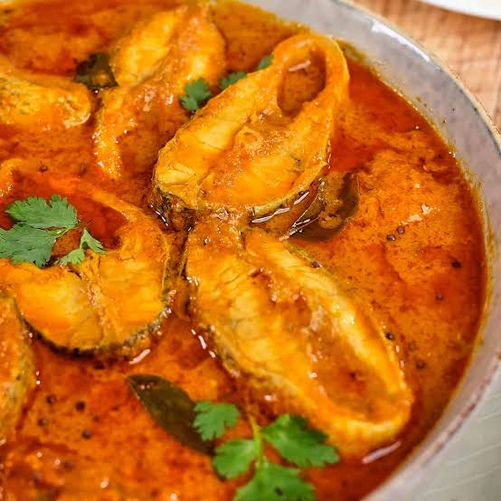

Home
Fish Curry

Descriptions
Essential ingredients for a classic South Asian and Southeast Asian fish
curry include firm fish, aromatics, spices, and a liquid base like coconut
milk or tamarind.
Ingredients
- 500g firm white fish (like cod or snapper), cut into large pieces
- 1 can (400ml) coconut milk
- 1 chopped onion
- 2 chopped tomatoes
- 2 teaspoons ginger-garlic paste
- 1 teaspoon turmeric powder
- 1 teaspoon chili powder (add less for mild heat)
- 2 teaspoons coriander powder
- 2 tablespoons vegetable oil
- Salt to taste
- Fresh cilantro for topping
Instructions
-
Saute aromatics:Heat oil in a large pan over medium
heat.Add the chopped onion and cook for 5 minutes until soft.
-
Add spices:Stir in the ginger-garlic paste, turmeric,
chili powder, and coriander powder.Cook for 1 minute until fragrant.
-
Build the sauce:Add the chopped tomatoes and cook until
they break down and become soft.
-
Pour coconut milk:Pour in the coconut milk and a splash
of water. Bring the mixture to gentle simmer.
-
Cook the fish:Gently place the fish pieces into the
simmering sauce.Cover the pan and cook for 6 to 8 minutes until the fish
flakes easily.
-
Serve:Turn off the heat, season with salt, and top with
fresh cilantro. Enjoy with warm rice or bread.